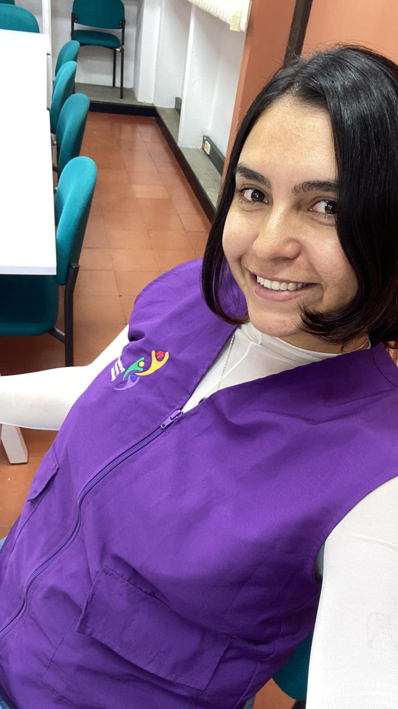

Sociología
Jovenes que ni estudian ni trabajan
Experiencias de los jóvenes que ni estudian ni trabajan en Cali, Colombia.
Consultar proyecto↗Hola soy Nat, una sociodemografa con perspectiva en género y enfoque diferencial.
Socióloga y Magíster en Demografía, con especialización en Género en la Economía y una sólida trayectoria en Violencias y Discriminaciones basadas en Género en contexto universitario.
Analizar los datos con lentes de género.

Un poco sobre mí
Soy socióloga, con maestría en demografía y experiencia en análisis de datos con perspectiva de género.
En este portafolio presento mis proyectos, publicaciones y experiencias de trabajo académico y profesional.
Lo que uso
Trabajo e investigación
Investigación con perspectiva de género y enfoque diferencial.
Sociología
Experiencias de los jóvenes que ni estudian ni trabajan en Cali, Colombia.
Consultar proyecto↗Demografía
Un análisis comparativo sobre los factores que explican la participación laboral de la población adulta mayor en México y Colombia, 2015.
Consultar proyecto ↗Género
Transformación de información cualitativa y cuantitativa en hallazgos y visualizaciones comprensibles.
Consultar proyecto ↗Producción académica
Trabajo de grado para optar por el título de socióloga. En el ejercicio de investigación se aborda el estudio de los Jóvenes Ninis en Cali. El propósito central del estudio es comprender las circunstancias por las cuales se configura un/a joven Nini en la ciudad de Cali.
Un análisis comparativo sobre los factores que explican la participación laboral de la población adulta mayor en México y Colombia, 2015
Consejo Nacional de Evaluación de la Política de Desarrollo Social. Estudio Diagnóstico del Derecho al Trabajo 2022. Ciudad de México: CONEVAL, 2022.
Incluye informes técnicos, documentos de trabajo y otros productos relevantes.